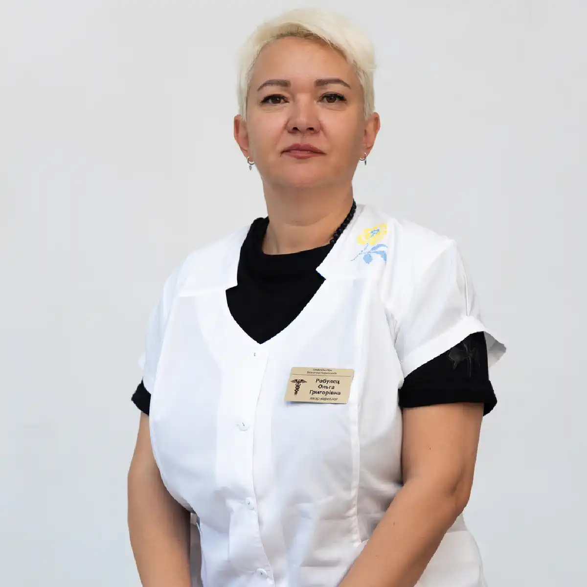

+38(068) 79 72 782
+38(068) 79 72 782Капельница от алкоголя на дому Львов
Срочная помощь при алкогольной интоксикации


Бесплатная консультация, работаем круглосуточно 24/7
Срочная помощь при алкогольной интоксикации
Алкогольная интоксикация — это состояние, при котором организм перегружен продуктами распада этанола и не способен самостоятельно восстановить нормальную работу внутренних органов. Под воздействием токсинов страдают печень, сердечно-сосудистая система, головной мозг и нервная система, нарушается водно-электролитный баланс и обменные процессы. Головная боль, тошнота, общая слабость, дрожь в теле, тревожность, раздражительность, нарушения сна и скачки артериального давления — лишь часть симптомов, которые могут возникать как после длительного запоя, так и после однократного чрезмерного употребления спиртного. Опасность алкогольной интоксикации заключается в том, что без медицинской помощи состояние может прогрессировать. Усиливается нагрузка на сердце, возрастает риск аритмий и гипертонических кризов, ухудшается работа печени и почек, повышается вероятность развития судорог и острых психоэмоциональных расстройств. Особенно тяжело интоксикация протекает у людей с хроническими заболеваниями, ослабленным иммунитетом или в возрасте, когда компенсаторные возможности организма снижены.
Капельница от алкоголя на дому во Львов позволяет быстро и безопасно снизить уровень интоксикации, не дожидаясь ухудшения состояния. Инфузионная терапия способствует ускоренному выведению токсинов, восполнению дефицита жидкости и электролитов, нормализации давления и улучшению общего самочувствия. Домашний формат лечения особенно удобен для пациентов, которые чувствуют выраженную слабость, не могут самостоятельно добраться до клиники или нуждаются в конфиденциальной помощи без госпитализации. Капельница на дому помогает не только облегчить симптомы, но и предотвратить развитие серьёзных осложнений, создавая условия для более безопасного и контролируемого восстановления организма после воздействия алкоголя.
Алкогольная интоксикация может проявляться по-разному — всё зависит от количества выпитого спиртного, продолжительности употребления, индивидуальных особенностей организма и наличия хронических заболеваний. У одних людей симптомы выражены умеренно, у других состояние быстро ухудшается и требует медицинского вмешательства. К наиболее распространённым проявлениям алкогольной интоксикации относятся:
При выраженной интоксикации симптомы могут нарастать, дополняясь паническими состояниями, резкой усталостью, ухудшением координации и снижением работоспособности. Игнорирование этих признаков и попытки «перетерпеть» состояние без медицинской помощи создают дополнительную нагрузку на сердце, печень и нервную систему. В результате самочувствие может резко ухудшиться, а риск развития осложнений — таких как аритмии, гипертонический криз или затяжное похмелье — значительно возрастает.
Процедура начинается с обязательного осмотра врача-нарколога. Нарколог оценивает общее состояние пациента, измеряет артериальное давление, частоту пульса, уровень кислорода в крови, обращает внимание на наличие тремора, тревожности, нарушений сознания и координации. Также уточняется длительность и характер употребления алкоголя, объёмы выпитого, наличие хронических заболеваний сердечно-сосудистой системы, печени, почек, а также приём лекарственных препаратов. Такой первичный осмотр позволяет объективно оценить степень интоксикации и убедиться, что проведение капельницы на дому безопасно и целесообразно.
После осмотра подбирается индивидуальная схема терапии. Универсальных составов не существует — врач учитывает возраст пациента, тяжесть состояния, сопутствующие заболевания и возможные риски. Капельница устанавливается медленно, чтобы избежать резкой нагрузки на сердце и сосуды. В течение всей процедуры врач находится рядом, контролирует самочувствие пациента, показатели давления и пульса, наблюдает за реакцией организма на вводимые препараты и при необходимости корректирует состав или скорость инфузии. После завершения процедуры медицинская помощь не заканчивается. Нарколог оценивает динамику состояния, убеждается в стабилизации самочувствия и даёт подробные рекомендации по дальнейшему восстановлению. Они могут касаться питьевого режима, питания, приёма поддерживающих препаратов, режима сна и профилактики повторной алкогольной интоксикации. Такой комплексный и контролируемый подход позволяет не только снять острые симптомы, но и значительно снизить риск осложнений и повторного ухудшения состояния.
Состав капельницы формируется индивидуально для каждого пациента после осмотра и оценки степени алкогольной интоксикации. Единых или шаблонных схем лечения не существует, поскольку реакция организма на алкоголь, скорость выведения токсинов и переносимость лекарственных средств у разных людей существенно различаются. При подборе инфузионной терапии врач учитывает общее состояние пациента, длительность употребления спиртного, возраст, наличие хронических заболеваний и выраженность симптомов. В зависимости от этих факторов капельница может включать несколько групп препаратов, каждая из которых выполняет свою конкретную задачу и дополняет общее лечение.
Стоимость капельницы от алкоголя на дому во Львове начинается от 2199 грн.
Капельница действует комплексно и максимально эффективно за счёт того, что лекарственные препараты поступают напрямую в кровоток, минуя желудочно-кишечный тракт. Такой способ введения особенно важен при алкогольной интоксикации, когда тошнота, рвота, отсутствие аппетита и раздражение слизистой желудка делают приём таблеток малоэффективным или вовсе невозможным. Внутривенное введение позволяет избежать дополнительной нагрузки на желудок и печень, обеспечивая более предсказуемое и контролируемое действие препаратов. Попадая сразу в кровь, лекарственные средства начинают работать практически сразу, что даёт возможность быстро воздействовать на ключевые механизмы интоксикации.
Инфузионная терапия способствует ускоренному выведению токсических продуктов распада этанола, восполняет дефицит жидкости и электролитов, нормализует кислотно-щелочной баланс и обменные процессы. Улучшение микроциркуляции и кровообращения способствует более эффективному снабжению тканей кислородом и питательными веществами, что особенно важно для головного мозга и сердечно-сосудистой системы. За счёт этого постепенно снижается нагрузка на печень, сердце, почки и нервную систему, стабилизируется артериальное давление, уменьшается тахикардия и улучшается общее состояние организма. Восстановление происходит мягко и постепенно, без резких скачков самочувствия, которые часто возникают при самостоятельных попытках выйти из интоксикации.
Благодаря прямому поступлению препаратов в кровь улучшение состояния наступает значительно быстрее по сравнению с приёмом таблеток или использованием народных методов. Уже в процессе процедуры уменьшается выраженность головной боли, снижается тошнота, ослабевает дрожь, уходит чувство внутренней тревоги и напряжения. После капельницы пациенты отмечают появление сил, ясности в голове и улучшение общего самочувствия. Именно поэтому капельница считается одним из самых эффективных и безопасных методов медицинской помощи при алкогольной интоксикации и тяжёлом похмельном синдроме, позволяя не только облегчить симптомы, но и создать условия для полноценного восстановления организма.
Прокапаться от алкоголя дома — один из самых эффективных и безопасных способов справиться с тяжёлым похмельным синдромом и последствиями алкогольной интоксикации. В отличие от народных методов и приёма таблеток, которые действуют поверхностно и часто дают лишь кратковременное облегчение, капельница воздействует на первопричину плохого самочувствия — накопление токсинов и нарушение обменных процессов в организме. Инфузионная терапия позволяет комплексно восстановить внутренний баланс и запустить естественные механизмы восстановления.
Особенно важна капельница в ситуациях, когда выражены тошнота, рвота, сильная слабость, дрожь, тревожность или нарушения сна. В таких состояниях приём лекарств внутрь может быть неэффективным или невозможным, а народные способы — только усугублять нагрузку на сердце, печень и сосуды. Внутривенное введение препаратов обеспечивает быстрое поступление действующих веществ в кровь, что позволяет значительно быстрее снизить интоксикацию и улучшить самочувствие. Прокапывание от алкоголя на дому помогает не только устранить головную боль и тошноту, но и стабилизировать артериальное давление, снизить тревожность, восстановить сон и общее состояние организма. Такой подход снижает риск повторного употребления алкоголя «для облегчения» и позволяет мягко выйти из похмельного состояния без дополнительного вреда для здоровья.
Детоксикация от алкоголя на дому направлена на комплексное очищение организма от токсинов и продуктов распада этанола, а также на восстановление нормальной работы внутренних органов, пострадавших в результате употребления алкоголя. Во время интоксикации нарушается водно-электролитный баланс, страдает сердечно-сосудистая система, печень и нервная система, что отражается на общем самочувствии и психоэмоциональном состоянии человека. Инфузионная терапия позволяет мягко и контролируемо запустить процессы восстановления, не создавая дополнительной нагрузки на организм.
Капельница помогает снизить уровень интоксикации, улучшить кровообращение, нормализовать артериальное давление и сердечный ритм, уменьшить тревожность и восстановить сон. За счёт восполнения дефицита жидкости и необходимых микроэлементов снижается чувство слабости, проходит дрожь, появляется ясность сознания и общее ощущение облегчения. Детоксикация также снижает риск осложнений и предотвращает ухудшение состояния, которое часто возникает при попытках справиться с интоксикацией самостоятельно.
Детоксикация от запоя на дому во Львове имеет дополнительное преимущество — он снижает уровень стресса и психологического напряжения. Пациент находится в привычной обстановке, без необходимости ехать в клинику и контактировать с посторонними людьми, что особенно важно при выраженной слабости и тревоге. Комфортные условия и медицинский контроль делают детоксикацию от алкоголя на дому более эффективной и безопасной, способствуя более быстрому и устойчивому восстановлению организма.
Срочная медицинская помощь требуется при длительном запое, резком ухудшении самочувствия, выраженной тревоге, панических состояниях, стойкой бессоннице или резких скачках артериального давления. Эти симптомы указывают на то, что организм не справляется с интоксикацией самостоятельно, а дальнейшее промедление может привести к серьёзным осложнениям со стороны сердца, сосудов и нервной системы. В подобных ситуациях особенно опасно пытаться «перетерпеть» состояние или использовать народные методы, которые не контролируют риски и могут усугубить ситуацию.
В таких случаях важно как можно быстрее вызвать врача-нарколога, который проведёт осмотр, оценит тяжесть состояния и подберёт безопасную схему помощи. Срочная капельница от запоя на дому во Львов позволяет оперативно снизить уровень интоксикации, нормализовать давление и сердечный ритм, уменьшить тревожность и восстановить общее самочувствие. Инфузионная терапия помогает стабилизировать состояние пациента и предотвратить развитие опасных осложнений, таких как гипертонический криз, судороги или алкогольный психоз. Быстрый выезд нарколога и своевременное начало лечения часто становятся решающим фактором для сохранения здоровья. Срочная помощь на дому позволяет начать детоксикацию без госпитализации, в комфортных и спокойных условиях, что особенно важно при тяжёлом физическом и эмоциональном состоянии пациента.
Алкогольная интоксикация представляет серьёзную угрозу для здоровья из-за высокого риска развития опасных и нередко непредсказуемых осложнений. На фоне токсического воздействия этанола и продуктов его распада нарушается работа сердечно-сосудистой системы, что может проявляться аритмиями, резкими скачками артериального давления, гипертоническими кризами и выраженной тахикардией. Нервная система также страдает одной из первых: возможны судорожные состояния, резкая тревожность, дезориентация и нарушения сознания. В тяжёлых случаях интоксикация приводит к развитию алкогольного психоза, сопровождающегося галлюцинациями, страхом, агрессией и выраженными психоэмоциональными расстройствами, опасными как для самого пациента, так и для окружающих.
Дополнительную опасность представляет токсическое поражение внутренних органов. Печень и почки испытывают чрезмерную нагрузку, что нарушает процессы детоксикации и выведения вредных веществ из организма. Страдают также сосуды и центральная нервная система, ухудшается кровоснабжение головного мозга, снижается способность организма к самовосстановлению. Особенно высок риск осложнений у людей с хроническими заболеваниями сердца, печени, сосудов и нервной системы. У таких пациентов даже относительно умеренная алкогольная интоксикация может спровоцировать резкое ухудшение состояния, обострение основного заболевания и развитие жизнеугрожающих последствий. Дополнительными факторами риска являются возраст, общее истощение организма, дефицит витаминов и длительный алкогольный стаж. Своевременная медицинская помощь играет ключевую роль в предотвращении осложнений и стабилизации состояния. Профессиональная детоксикация позволяет снизить концентрацию токсинов в крови, восстановить водно-электролитный баланс, поддержать работу сердца, печени и нервной системы, а также контролировать состояние пациента на всех этапах восстановления. Раннее обращение к врачу значительно снижает вероятность тяжёлых последствий, позволяет избежать экстренных состояний и помогает безопасно выйти из алкогольной интоксикации без угрозы для жизни и здоровья.
Вызов нарколога на дом является оптимальным и наиболее безопасным решением при тяжёлом похмельном синдроме или запое, когда состояние пациента требует профессионального медицинского вмешательства. В домашних условиях врач может оперативно оценить ситуацию без дополнительного стресса для пациента, связанного с поездкой в клинику. Это особенно важно при выраженной слабости, тревожности, скачках давления, треморе или нарушениях сна, когда самостоятельное передвижение затруднено или небезопасно.
Нарколог проводит полноценный осмотр: оценивает общее состояние пациента, измеряет артериальное давление, пульс, уровень кислорода в крови, уточняет длительность употребления алкоголя и наличие сопутствующих заболеваний. На основании этих данных врач оказывает необходимую медицинскую помощь, подбирает индивидуальную схему детоксикации и контролирует реакцию организма на лечение. Такой подход позволяет быстро снизить интоксикацию, стабилизировать работу сердца и нервной системы, улучшить самочувствие и предотвратить развитие осложнений.
Важным преимуществом вызова нарколога на дом является возможность своевременно принять решение о формате дальнейшего лечения. Если состояние пациента позволяет, терапия проводится на дому под медицинским контролем. При выявлении опасных симптомов или рисков для жизни врач рекомендует госпитализацию. Такой взвешенный и профессиональный подход обеспечивает максимальную безопасность, постоянный контроль состояния пациента и значительно снижает вероятность тяжёлых последствий алкогольной интоксикации или запоя.
Прокапаться дома во Львов — это возможность получить профессиональную медицинскую помощь без необходимости посещения клиники и без дополнительного стресса для организма. Домашний формат лечения особенно удобен при выраженной слабости, тревожности, тошноте и общем ухудшении самочувствия, когда поездка в медицинское учреждение может быть затруднена или небезопасна. В привычной обстановке пациент чувствует себя спокойнее, что положительно влияет на эффективность терапии и скорость восстановления.
Индивидуальный подход является ключевым преимуществом прокапывания на дому. Врач оценивает состояние пациента, степень интоксикации, наличие хронических заболеваний и подбирает оптимальный состав капельницы с учётом всех медицинских показаний. Анонимность и конфиденциальность лечения позволяют обратиться за помощью без опасений огласки или осуждения, что особенно важно для многих пациентов и их близких. Контроль врача на всех этапах процедуры обеспечивает безопасность и прогнозируемый результат. Нарколог наблюдает за реакцией организма на препараты, при необходимости корректирует лечение и даёт рекомендации по дальнейшему восстановлению. Благодаря такому подходу прокапаться дома во Львове становится одним из самых удобных, эффективных и безопасных методов помощи при алкогольной интоксикации и тяжёлом похмельном синдроме.
Наркологи UmbrellaPlus оказывают профессиональную и полностью анонимную помощь при алкогольной интоксикации и запое на дому во Львов. Лечение начинается с осмотра и оценки состояния пациента, после чего врач подбирает индивидуальную схему детоксикации с учётом тяжести интоксикации, длительности употребления алкоголя и наличия сопутствующих заболеваний. Такой персональный подход позволяет проводить терапию максимально эффективно и безопасно.
Медицинский контроль осуществляется на всех этапах оказания помощи. Нарколог наблюдает за реакцией организма во время процедуры, контролирует показатели давления, пульса и общего самочувствия, при необходимости корректирует состав капельницы. Это снижает риск осложнений и обеспечивает более стабильное и прогнозируемое восстановление после алкогольной нагрузки. Важной частью работы является уважительное и тактичное отношение к пациенту, без осуждения и давления, что особенно важно при тревожных и ослабленных состояниях. Помощь на дому позволяет стабилизировать состояние в комфортной обстановке, без лишнего стресса и необходимости госпитализации. Такой формат делает первый шаг к восстановлению более простым и психологически комфортным, помогая не только облегчить острые симптомы интоксикации, но и создать условия для дальнейшего улучшения самочувствия и отказа от повторного употребления алкоголя.
Звоните: +38(050-021-69-57)
Да, мы строго соблюдаем полную конфиденциальность на всех этапах лечения. Информация о пациенте, диагнозе и прохождении терапии не передаётся третьим лицам. Обращение к нам не влечёт постановку на учёт. Вы можете быть уверены в безопасности и анонимности.
Программа лечения разрабатывается индивидуально после консультации со специалистом. Учитываются вид зависимости, её длительность, физическое и психологическое состояние пациента. Такой подход позволяет повысить эффективность терапии и снизить риск срыва. Мы не используем шаблонные решения.
Да, мы сопровождаем пациентов и после основного курса лечения. Проводятся консультации, рекомендации по адаптации и профилактике рецидивов. При необходимости возможна дальнейшая психологическая поддержка. Это помогает сохранить результат и вернуться к полноценной жизни.
Анонимно

Ну в хлопців просто золоті руки й світла голова, мене капали Олексій та Владислав, буквально за декілька сеансів я наче заново народився, до цього пив більше 3х тижнів, не міг зупинитись, дуже радий що знайшов саме цих спеціалістів, всім рекомендую
Анонимно
В течение нескольких лет я злоупотреблял алкоголь, что привело к увольнению с работы и вызвало у меня мысли о суициде. Понимая, что такой образ жизни неприемлем, я обратился за помощью в клинику “Амбрела”. Здесь я смог преодолеть свою зависимость от спиртного благодаря заботливым и опытным врачам, а также эффективной системе лечения. Спустя более года я полностью избавился от желания употреблять алкоголь, и теперь моя жизнь вернулась в норму. Я даже не приближаюсь к спиртному! Благодарю врачей клиники “Амбрела” за их помощь и заботу.
Анонимно
Я обращался за помощью в различные клиники, пытаясь избавиться от своей зависимости от алкоголя, но без особых успехов. Никак не мог справиться с желанием прибегнуть к бутылке, пока друг не посоветовал мне обратиться в центр “Амбрелла”. Я записался на прием и был поражен заботливым отношением к пациентам. Уже прошло два года, и теперь я смотрю на алкоголь с абсолютной равнодушием, активно занимаюсь спортом и улучшил отношения в семье. Благодаря центру “Амбрелла” моя жизнь была спасена от алкогольной зависимости!
Анонимно
Хочу выразить свою благодарность врачам из центра алкоголизма “Амбрела” за то, что они буквально спасли мою жизнь. В течение последнего года я сильно увлекался питьем, и все это привело к катастрофическим последствиям. Хотя я ходил на терапевтические сеансы, но безрезультатно. Тогда я нашел адрес клиники “Амбрела” в интернете, изучил отзывы и информацию о центре, и записался на прием. Там мне сразу предложили методику лечения, которая помогла не только справиться с физической ломкой, но и психической зависимостью от алкоголя. Не буду распространяться, скажу только одно - после пребывания в этой клинике я стал другим человеком, и навсегда забыл, что такое привкус алкоголя. Больше меня не тянет на это! Я искренне верю, что в центре “Амбрела” трудятся настоящие целители душ!
Анонимно
После сложного развода мой сын начал подавлять свою обиду и горе употреблением алкоголя. Он старался скрывать это от меня, но я, как мать, почувствовала, что что-то не так. В конечном итоге, ситуация стала критической. Моя знакомая посоветовала мне обратиться в клинику “Амбрела”. Я была приятно удивлена их работой! Они помогли сыну преодолеть очередной период злоупотребления алкоголем, и с тех пор прошел уже более года, и он совсем не пьет.
Анонимно
Благодаря вашей помощи, моя семья была спасена. Я с трудом уговорила мужа начать лечение, и последний каплей был пьяное ДТП. К счастью, в аварии никто не пострадал, но это был для него сигнал к действию. Он наконец согласился пройти курс лечения на дому, в стационар не хотел ложиться. Лечение было трудным, и были моменты, когда срыв был настолько близок, но благодаря вашему центру Амбрелла мы справились с этим.
Анонимно
Для меня эта клиника стала настоящим спасением! Долгое время я упорно отказывался от лечения, уверен был, что со мной все в порядке. Но к счастью, семья уговорила меня попробовать. И сегодня я чувствую себя невероятно счастливым, осознавая, что мне абсолютно не нужен алкоголь. Огромное спасибо за помощь и поддержку, которые я получил здесь! Я благодарен вам за новую возможность жить полноценной и счастливой жизнью!
Анонимно
Выражаю благодарность ребятам, которые оказали мне помощь и не отвернулись. Уже 10 месяцев я остаюсь чистой. Благодарю за то, что помогли найти новый путь в моей жизни.
Номер телефона:
+380 (68) 797 27 82
+380 (50) 021 69 57
Адрес наркологического центра вашего города уточняйте по
телефону
Работаем в: Киеве, Одессе, Львове, Харькове, Днепре,
Запорожье, Черкассах, Чугуеве, Черноморске, Каменском
Telegram: t.me/umbrellaplus
График работы: Круглосуточно